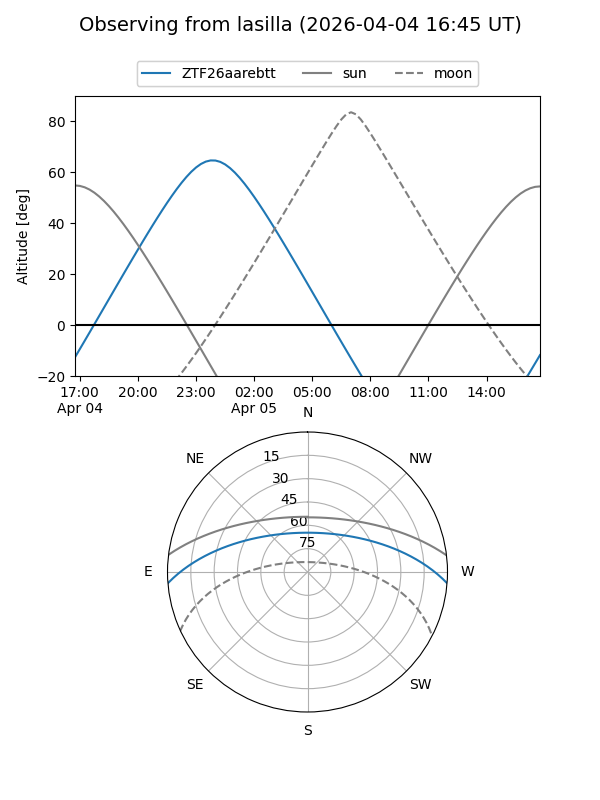
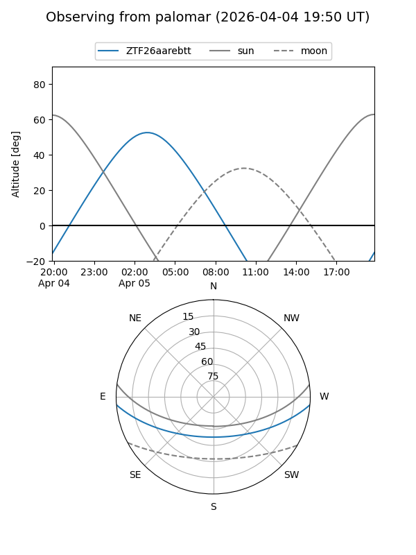

ZTF26aarebtt
Target ZTF26aarebtt at 2026-04-05 05:39
Aliases and brokers:
FINK: link
Lasair: link
ALeRCE: link
alt names
ZTF26aarebtt (ztf,fink_ztf)
Coordinates:
equatorial (ra, dec) = 120.2451,-3.91384
equatorial (HMS+DMS) = 08:00:58.81,-03:54:49.83
galactic (l, b) = (224.6036,+13.54359)
Flags:
Photometry:
last ztfg=20.13
1 ztfg detections
Lightcurve
Visibility


Additional plots